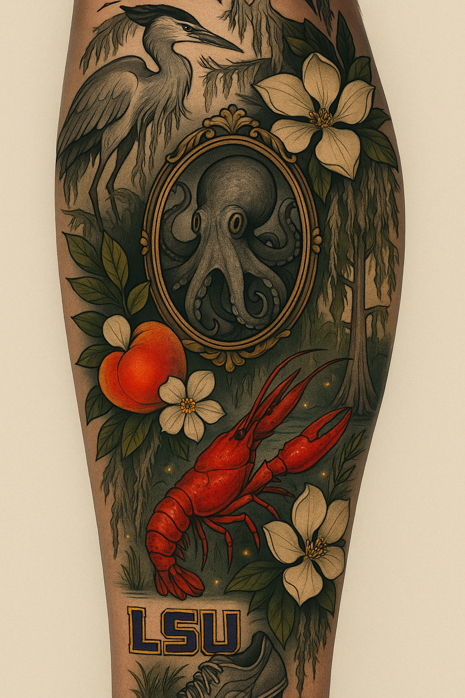

I'm Mariah! My first memory of using a computer would have to be around 5 years old or younger. I actually have a picture of myself standing on my dad's knee while he was using the computer. We have always had computers in our household. I remember the dial up connection to access the internet. I remember not being able to use the phone at the same time. Years later I would sign up for my first social media profile, MySpace, and unbeknownst to me at the time, spend hours coding on the backend adding wall papers and customizing my page with songs and graphics. I hope I make a good grade on my test!

Illustrations generated with AI using ChatGPT OpenAI from a prompt by Mariah Gandy
Back to the World